Geleca, massa gelatinosa utilizada como brinquedo, feita com hidrogenocarbonato de sódio, um sal.
michellegibson/iStockphoto.com
A
geleca , também conhecida por
amoeba ou
slime , é uma massa gelatinosa utilizada como brinquedo especialmente entre as crianças. Pode-se esticá-la, grudá-la, fazer bolhas e o que mais a criatividade permitir. Ela pode ser feita utilizando ingredientes caseiros,
sendo um deles o hidroge- nocarbonato de sódio (NaHCO
3 ), também conhecido como bicarbonato de sódio, um composto classificado como
sal , devido a algumas características que substâncias dessa função inorgânica apresentam.
Ingredientes
1 tubo (90 g) de cola branca ou cola de isopor (transparente); •
1 pacote de bicarbonato de sódio (aproximadamente 2 colheres de sopa) – vendido em supermercados; •
1 frasco (100 mL) de água boricada 3% – vendida em farmácias; •
Corante alimentício (opcional); •
Glitter extrafino (opcional); •
Dois copos; •
Colher, garfo ou palito de picolé; •
Pote com tampa.
Como fazer
Em um copo, despeje a água boricada e acrescente 1 colher de sopa de bicarbonato de sódio. Misture. Acrescente mais bicarbonato e mexa sempre, até parar de sair “bolhas” do copo. Em outro copo, acrescente o
tubo inteiro de cola, 5 gotas de corante alimentício e o
glitter . Misture.
Com a colher, transfira a solução de água boricada e bicarbonato de sódio para o copo que contém a cola. Continue misturando. Adicione mais solução de água boricada e bicarbonato de sódio até que a mistura fique com o aspecto
de “geleca” e não grude mais na mão. Guarde sua geleca em um pote com tampa para que ela dure mais.
Na experiência da geleca caseira, de qual gás são as bolhas liberadas?
Todo sal é solúvel em água?
Neste capítulo serão abordadas as habilidades
EM13CNT101
,
EM13CNT104
,
EM13CNT201
e
EM13CNT307
.
Definição de sal
Sais são compostos iônicos que apresentam pelo menos um cátion proveniente de uma base e um ânion proveniente de um ácido, segundo os conceitos propostos por Arrhenius. Em solução aquosa, sofrem dissociação; suas soluções são classificadas
como eletrolíticas, pois apresentam íons livres, o que as torna boas condutoras de corrente elétrica.
Um sal é obtido por meio de uma
reação de neutralização total ou parcial entre um ácido e uma base de Arrhenius; além do sal, essa reação forma água e pode ser representada, genericamente, por:
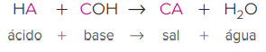
Utilizaremos a
“regra do escorregador” estudada nos compostos iônicos para montarmos a fórmula geral de um sal, uma vez que a montagem é feita a partir das cargas dos íons do ácido e da base que o compõem e que não entraram
na composição da fórmula da água.
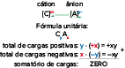
Nomenclatura
Para darmos nome a um sal, devemos conhecer o nome do seu ácido de origem, pois a terminação do nome do sal tem relação com ele. Veja, a seguir, a nomenclatura proposta pela União Internacional de Química Pura e Aplicada (IUPAC):
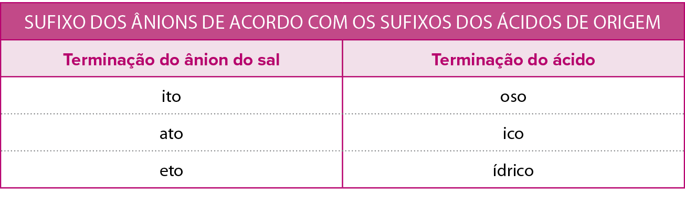
Assim, podemos generalizar o nome de um sal:
Diversos exemplos de nomenclatura de sais serão abordados a seguir, junto com os tipos de reação de neutralização – reações características dos sais. Alguns desses exemplos são cloreto de sódio (NaC
ℓ
), nitrato de amônio (NH
4 NO
3 ), sulfato de cálcio (CaSO
4 ) e sulfato de cobre(II) (CuSO
4 ).
Tipos de reações de neutralização
De acordo com a proporção estequiométrica envolvida em uma reação química, podemos encontrar diferentes tipos de reação de neutralização. Vamos estudá-los caso a caso.
Neutralização total
São reações de neutralização em que o número de hidrogênios ionizáveis (H
+ ) do ácido é
igual ao número de hidroxilas (OH
– ) da base, que juntos formarão água (H
+ +
OH
–=
H
2 O). O sal, por se tratar de um composto iônico, será formado pelos íons que sobraram da base e do ácido: o cátion e o ânion, respectivamente. Um sal gerado nesse tipo de reação é classificado como
sal neutro ou normal .
Vamos analisar alguns casos:
Exemplo 1: reação entre o ácido clorídrico (HC
ℓ
) e o hidróxido de sódio (NaOH).
Vamos imaginar o ácido na forma ionizada e a base na forma dissociada para analisarmos suas cargas:
H
+ C
ℓ–+
Na
+ OH
–➝
Na
+ C
ℓ–+
H
2 O
Nesse exemplo, tínhamos um monoácido (1 H
+ ) e uma monobase (1 OH
– ) reagindo na proporção de 1 : 1, formando, assim, uma molécula de água. Os íons que sobraram formaram um composto iônico, por isso vemos como produto, além da água, o sal formado pelo cátion Na
+ (oriundo da base) e pelo ânion C
ℓ– (oriundo do ácido). Vale lembrar que o cátion sempre vem na frente do ânion na fórmula de um composto iônico, pois a IUPAC recomenda que eles sejam
escritos na
ordem crescente de eletronegatividade .
H
C
ℓ+
Na OH
➝
NaC
ℓ+
H
2 O
Ácido Hidróxido Clor
eto
clor
ídrico de
sódio de
sódio
Exemplo 2: reação entre o ácido sulfúrico (H
2 SO
4 ) e o hidróxido de cálcio [Ca(OH)
2 ].
H
+ H
+ SO
4 2–+
Ca
2+ OH
– OH
–➝
Ca
2+ SO
4 2–+
2 H
2 O
Temos um diácido (2 H
+ ) e uma dibase (2 OH
– ) reagindo na proporção de 1:1, formando, assim, duas moléculas de água. Os íons que sobraram formaram um composto iônico, por isso vemos como produto, além da água, o sal formado pelo cátion Ca
2+ (oriundo da base) e pelo ânion SO
42– (oriundo do ácido).
H
2 SO
4+
Ca (OH)
2➝
CaSO
4+
2 H
2 O
Ácido Hidróxido Sulf
ato
sulfúr
ico de
cálcio de
cálcio
Exemplo 3: reação entre o ácido cloroso (HC
ℓ
O
2 ) e o hidróxido de alumínio [A
ℓ
(OH)
3 ].
3 H
+ C
ℓ
O
2–+
A
ℓ3+ OH
– OH
– OH
–➝
A
ℓ3+ 3 C
ℓ
O
2–+
3 H
2 O
Aqui temos um monoácido (1 H
+ ) e uma tribase (3 OH
– ). Para que a neutralização seja total, devemos balancear a reação na proporção de 3:1, formando, assim, três moléculas de águas. Os íons que sobraram formaram um composto iônico, por isso vemos como produto,
além da água, o sal formado pelo cátion A
ℓ3+ (oriundo da base) e pelo ânion C
ℓ
O
2 – (oriundo do ácido).
3 H C
ℓ
O
2+
AL
(OH)
3➝
A
ℓ
(C
ℓ
O
2 )
3+
3 H
2 O
Ácido Hidróxido Clor
ito de
clor
oso de
alumínioalumínio
Toda vez que um exercício solicitar uma reação de neutralização, iremos montar a neutralização total do ácido e da base; só faremos as neutralizações parciais caso nos seja pedido para usar uma proporção definida.
Sais formados por
cátions ou ânions poliatômicos – ou seja, que são constituídos por, ao menos, dois elementos químicos – e que apresentam carga diferente de 1
+
ou 1
–
devem aparecer dentro de parênteses ao se aplicar a “regra do escorregador” para chegar à fórmula do composto. Veja alguns exemplos de montagem da fórmula desses sais e, na sequência, como eles ficariam dissociados em água:
Mg
2++
PO4
3–:
Mg3 (PO4)2
Mg3(PO4)2
3 Mg
2++
2 PO4
3–
NH4
++
SO4
2–:
(NH4)2SO4
(NH4)2SO4
2 NH4
++
SO44
2–
A
ℓ3++
CO3
2–:
A
ℓ
2(CO3)3
A
ℓ
2(CO3)3
2 A
ℓ3++
3 CO3
2–
Neutralização parcial do ácido
São reações de neutralização em que o número de hidrogênios ionizáveis (H
+ ) do ácido é
maior do que o número de hidroxilas (OH
– ) da base, os quais, juntos, formarão água (H
+ +
OH
–=
H
2 O). Assim, acontece a ionização parcial do ácido. Os hidrogênios ionizáveis que não reagiram aparecem, na composição da fórmula do sal, entre o cátion e o ânion. Seu nome também sofre algumas modificações em comparação
com os sais obtidos em uma neutralização total. Um sal gerado nesse tipo de reação é classificado como
sal ácido ou hidrogenossal .
Vamos analisar alguns casos:
Exemplo 1: reação entre o ácido carbônico (H
2 CO
3 ) e o hidróxido de sódio (NaOH) na proporção de 1:1.
Colocando o ácido na forma ionizada e a base na forma dissociada, podemos analisar suas cargas:
1 H
+ H
+ CO
3 2–=
1 Na
+ OH
– Na
+ H
+ CO
32–+
H
2 O
Temos um diácido (2 H
+ ) e uma monobase (1 OH
– ) reagindo na proporção de 1:1, formando, assim, uma molécula de água e um sal que contém o outro íon H
+ que não reagiu com o OH
– . Esse hidrogênio aparece entre o cátion e o ânion do sal.
O sal pode receber qualquer um dos três nomes dados acima, sendo o prefixo “mono” opcional. Assim, também estaria correto hidrogenocarbonato de sódio ou carbonato ácido de sódio. O prefixo
“bi” pode ser utilizado apenas quando temos um diácido que sofre uma neutralização parcial. Esse prefixo tem origem histórica: na época, não se conhecia com exatidão todas as fórmulas dos compostos e acreditava-se
que o bissulfato fosse o “dobro” do sulfato, por exemplo.
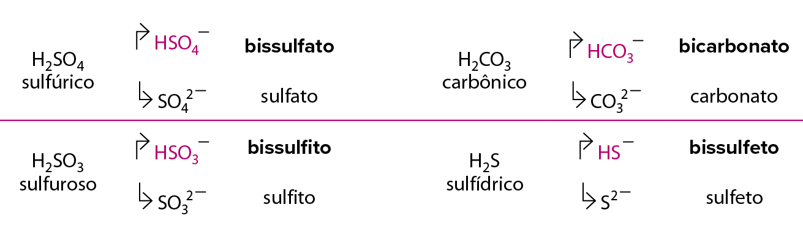
Exemplo 2: reação entre o ácido fosfórico (H
3 PO
4 ) e o hidróxido de potássio (KOH) na proporção de 1:1.
Olhando as fórmulas do ácido na forma ionizada e da base na forma dissociada, podemos analisar suas cargas:
1 H
+ H
+ H
+ PO
43–+
1 K
+ OH
–
K
+ 2 H
+ PO
43–+
H
2 O
Temos um triácido (3 H
+ ) e uma monobase (1 OH
– ) reagindo na proporção de 1:1, formando, assim, uma molécula de água e o sal, o qual contém os outros dois H
+ que não formaram água, sendo que estes deverão aparecer entre o cátion e o ânion na fórmula do sal.
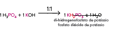
Não confunda a classificação de um sal com suas propriedades!
Por exemplo, o
bicarbonato de sódio (NaHCO 3
) é classificado como um
sal ácido , pois, em sua composição, encontramos um íon H+ que não reagiu com as hidroxilas presentes na base. No entanto,
apresenta propriedades básicas , sendo utilizado para neutralizar excesso de acidez.
Neutralização parcial da base
São reações de neutralização em que o número de hidrogênios ionizáveis (H
+ ) do ácido é
menor do que o número de hidroxilas (OH
– ) da base, os quais juntos formarão água (H
+ OH
–=
H
2 O). Com isso, acontece a neutralização parcial da base. Os íons OH
– que sobram aparecerão entre parênteses na fórmula do sal e estarão localizados entre o cátion e o ânion. Seu nome também sofre algumas modificações em comparação com os sais obtidos em uma neutralização total.
Um sal gerado nesse tipo de reação é classificado como
sal básico ou
hidroxissal .
O prefixo “di”, assim como todos os prefixos multiplicadores (tri, tetra etc.), são
obrigatórios . Apenas o prefixo “mono” é opcional.
Vamos analisar alguns casos:
Exemplo 1: reação entre o ácido cianídrico (HCN) e o hidróxido de magnésio [Mg(OH)
2 ], na proporção de 1:1.
Vamos analisar o ácido na forma ionizada e a base na forma dissociada:
1 H
+ CN
–+
1 Mg
2+ OH
– OH
–
Mg
2+ (OH
– )CN
–+
H
2 O
Temos um monoácido (1 H
+ ) e uma dibase (2 OH
– ) reagindo na proporção de 1:1, formando, assim, uma molécula de água e um sal, cuja fórmula contém, entre o cátion e o ânion, o íon OH
– que não reagiu com o H
+ .
O sal pode receber qualquer um dos dois nomes dados acima, sendo o prefixo “mono” opcional. Assim, também estaria correto hidroxicianeto de magnésio ou cianeto básico de magnésio.
Mais
Aqua Regia dissolves Gold, Periodic Videos.
As proporções entre os reagentes podem formar produtos diferentes.
A água régia (do latim
“aqua regia” , que significa “água real”) é uma mistura de ácido nítrico e ácido clorídrico concentrados, geralmente, na proporção de 1 para 3. É um líquido altamente corrosivo de coloração
amarela. Ela é uma das poucas substâncias que podem dissolver o ouro e a platina. A “água régia” tem esse nome devido à propriedade de dissolver os metais nobres (“regios”), embora o tantálio, o
irídio e outros metais extremamente inertes possam suportar o seu ataque. A invenção da água régia é atribuída ao alquimista árabe Geber, e ela também era muito empregada por outros alquimistas; ainda hoje, é utilizada
em diversos procedimentos analíticos. Vamos assistir ao vídeo que fala mais sobre a água régia. Vídeo em inglês com legendas disponíveis.
Exemplo 2: reação entre o ácido nítrico (HNO
3 ) e o hidróxido de chumbo(IV) [Pb(OH)
4 ] na proporção de 2:1.
Vamos imaginar o ácido na forma ionizada e a base na forma dissociada para analisarmos suas cargas:
2 H
+ NO
3 –+
1 Pb
4+ OH
– OH
– OH
– OH
–
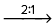 Pb
4+ 2 OH
– 2 NO3
–+
2 H
2 O
Temos um monoácido (1 H
+ ) e uma tetrabase (4 OH
– ) reagindo na proporção de 2:1, formando, assim, duas moléculas de água, e sobram dois íons OH
– sem reagir. Esses íons estarão presentes na fórmula do sal e deverão aparecer entre o cátion e o ânion.
O sal pode receber ainda os nomes que evidenciam a carga variável de um metal. O chumbo apresenta cargas
+
2 e
+
4; logo, também estariam corretos os nomes dihidroxinitrato plúmbico ou nitrato dibásico plúmbico.
Questão resolvida
1
Mackenzie-SP 2016 Alguns produtos comercializados no mercado têm como principais componentes substâncias inorgânicas, nas quais o elemento químico sódio encontra-se presente.Na tabela abaixo, segue a relação de algumas
dessas substâncias.
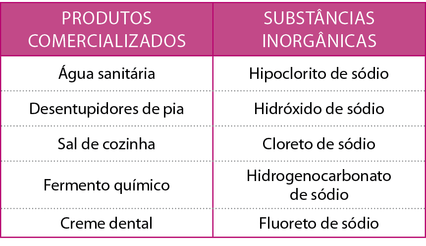
Assinale a alternativa na qual encontram-se as fórmulas químicas das substâncias inorgânicas presentes nos produtos comercializados, na ordem que aparecem na tabela, de cima para baixo.
NaHC
ℓ
O, NaOH, NaC
ℓ
O, NaHCO3 e NaF.
NaC
ℓ
O, NaOH, NaC
ℓ
, NaHCO3 e NaF.
NaHC
ℓ
O, NaC
ℓ
, NaOH, NaHCO2 e Na2F.
NaC
ℓ
O, NaHO, NaC
ℓ
, NaHCO4 e Na2F.
NaHC
ℓ
O, NaHO, NaC
ℓ
, NaHCO3 e NaF2.
Resolução:
Alternativa b
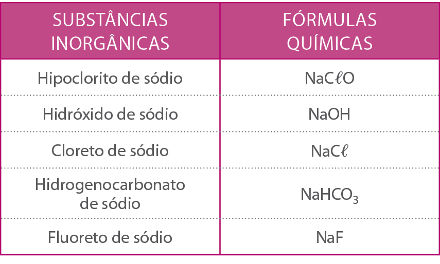
Sais duplos ou mistos
Sais duplos ou mistos são sais obtidos pela reação de neutralização entre dois ácidos e uma base ou entre um ácido e duas bases. Dessa forma, o sal formado terá dois cátions ou dois ânions.
Vamos analisar cada um dos casos mencionados.
Sais formados por dois ácidos
Sais obtidos pela reação entre dois ácidos e uma base.
Vamos estudar a reação entre HBr, HC
ℓ
e Ca(OH)
2 .
Note que temos dois ânions: brometo (Br
– ) e cloreto (C
ℓ– ). A IUPAC recomenda que eles sejam
escritos na
ordem crescente de eletronegatividade , por isso o cálcio veio antes – pois, por ser metal, é menos eletronegativo –, sendo seguido pelo brometo (ânion menos eletronegativo), que foi colocado antes do cloreto
(
Δ2 , ânion mais eletronegativo). Para
nomeá-los , a IUPAC recomenda que utilizemos a
ordem decrescente de eletronegatividade para os ânions e que estes sejam separados por hífen.
nome do ânion mais eletronegativo (
Δ2 )
++
nome do ânion menos eletronegativo
+
de
+
nome do cátion
Vale lembrar, aqui, a fila da eletronegatividade dos ametais em ordem decrescente:
Sais formados por duas bases
Sais obtidos pela reação entre um ácido e duas bases.
Vamos estudar a reação entre H
2 SO
4 , NaOH e KOH.
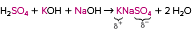
Note que temos dois cátions: potássio (K
+ ) e sódio (Na
+ ). A IUPAC recomenda que eles sejam
escritos na
ordem crescente de eletronegatividade , por isso o potássio (
Δ1 , cátion mais eletropositivo e, portanto, menos eletronegativo) foi colocado antes do sódio (cátion menos eletropositivo), que é seguido do sulfato. Para
nomeá-los , a IUPAC recomenda que utilizemos a
ordem decrescente de eletronegatividade para os cátions e o termo "duplo" junto do ânion.
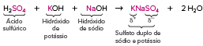
Sais hidratados
Sais hidratados são sais que absorvem água da atmosfera e a incorporam em seu retículo cristalino, fenômeno denominado
higroscopia . O número de moléculas incorporadas varia entre os diversos sais. A fórmula geral desses sais é CA
·
n H
2 O, em que o cátion está representado por (C
+ ), o ânion por (A
– ), e o “n” indica o grau de hidratação que aquele sal apresenta.
Para darmos nome, devemos seguir o padrão:
O prefixo representa o número de moléculas de água presentes, sendo 1 (mono), 2 (di), 3 (tri), 4 (tetra), 5 (penta) etc.
Veja os exemplos abaixo: •
CuSO
4·
5 H
2 O: sulfato de cobre(II) penta-hidratado •
CaC
ℓ2·
2 H
2 O: cloreto de cálcio di-hidratado •
Na
2 SO
4·
10 H
2 O: sulfato de sódio deca-hidratado
Quando um
sal é
aquecido , ele perde água e se torna um
sal anidro . Suas propriedades são completamente diferentes dos sais hidratados, inclusive no aspecto.
Como primeiro exemplo, podemos analisar o sulfato de cobre(II) penta-hidratado, que tem cor azul e que, ao ser aquecido (
á
300
°
C), elimina água e muda sua coloração para branco, conforme representado na equação abaixo e na figura a seguir.
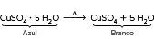
O símbolo
Δ
acima da seta indica que a reação ocorre com
aquecimento .
Sulfato de cobre(II) hidratado (azul) e anidro (branco).
Turtle Rock Scientific/ Science Source/Fotoarena
O mesmo ocorre com o cloreto de cobalto(II) hexa-hidratado, que altera sua coloração de rosa para azul ao ser aquecido, como observamos na equação abaixo e na figura a seguir.
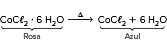
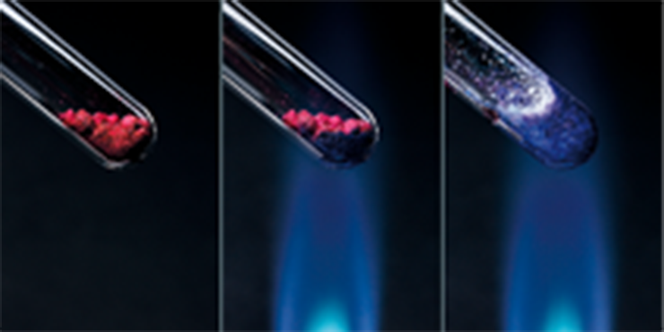
Cloreto de cobalto(II) hidratado (rosa) e anidro (azul).
Turtle Rock Scientific/Science Source/Fotoarena
Solubilidade em água
Sais são compostos iônicos. Assim, quando colocados em água, sofrem dissociação, gerando íons livres – uns mais que outros. A solubilidade de um sal não é algo simples de se determinar: devemos calculá-la experimentalmente, adicionando, em um béquer,
água e sal para analisá-la. Os dados são obtidos por meio de experimentos que ocorrem à temperatura ambiente (25
°
C), uma vez que a temperatura influencia na solubilidade de um sal. Podemos simplificar esses dados organizando-os em uma tabela que traz uma regra geral para a solubilidade dos sais de acordo com sua composição química. Alguns cátions e ânions dão ao
sal a característica de ser solúvel em água.
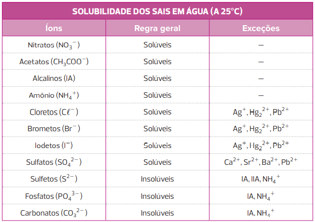
Não é comum falarmos em “força” de sais, porque, do ponto de vista prático, é mais importante saber sua solubilidade. Sais que são solúveis em água produzem muitos íons em solução aquosa e, assim, conduzem bem a corrente
elétrica.
Aplicações no cotidiano
A seguir, temos exemplos de aplicações de alguns dos sais estudados.
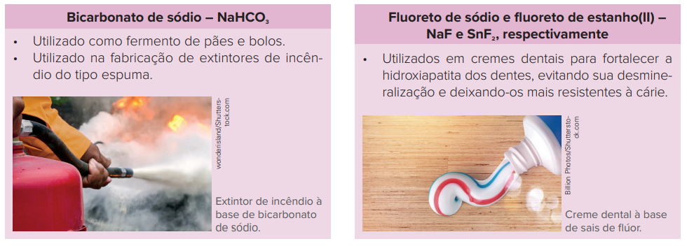
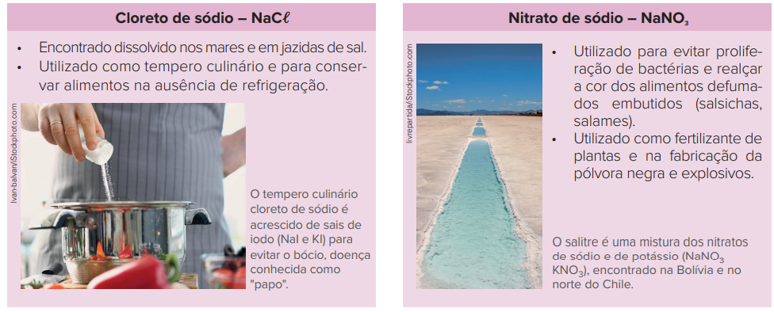
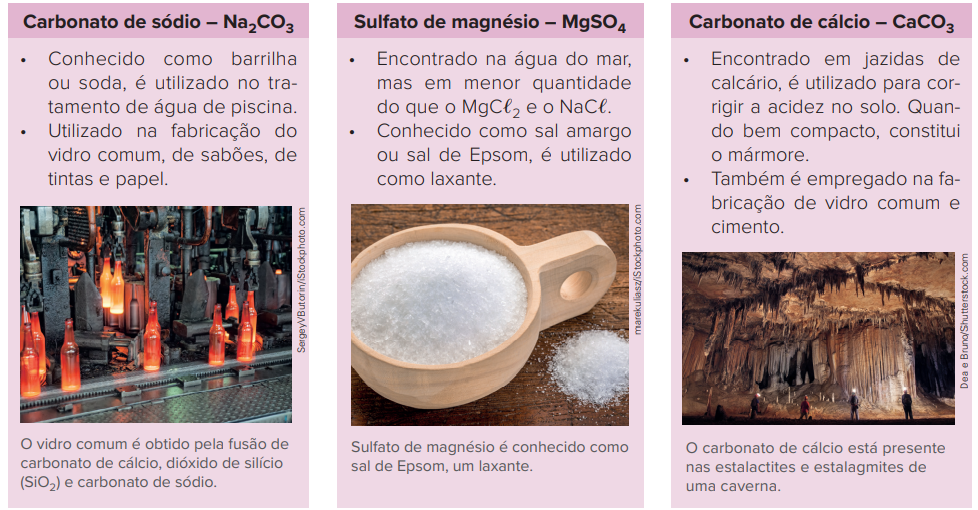
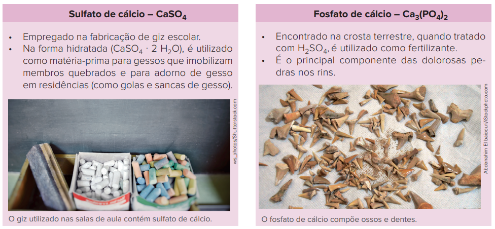
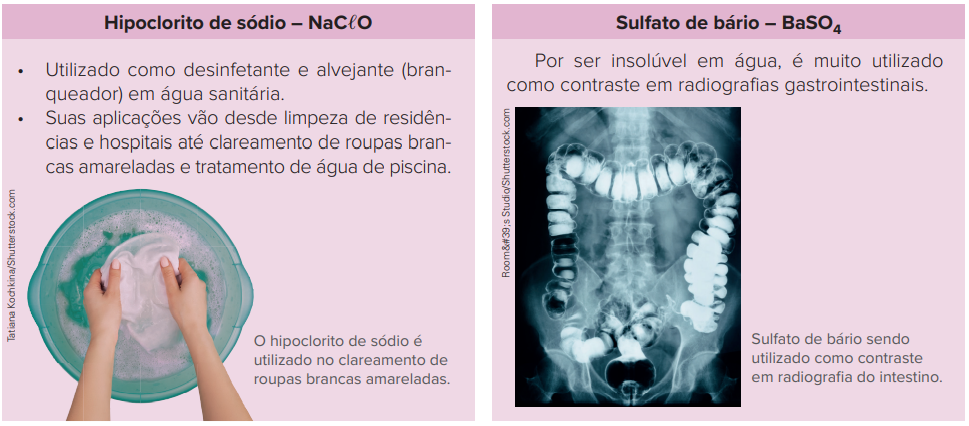
Dive in
1
O que são sais?
2
Escreva a equação da reação de dissociação para os sais e classifique-os quanto à solubilidade em água:
K
2 SO
4
Ca
3 (PO
4 )
2
FeCO
3
NH
4 CN
3
Escreva as equações das reações de neutralização total para a obtenção dos sais do exercício 2, nomeando os ácidos e bases utilizados.
K
2 SO
4
Ca
3 (PO
4 )
2
FeCO
3
NH
4 CN
4
Complete as equações para as reações de neutralização parcial abaixo e dê o nome dos sais formados:
H
2 SO
4+
LiOH
H
3 PO
4+
2 NaOH
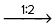
H
2 CO
3+
KOH
HBrO
3+
Fe(OH)
3
5
IFSul-RS 2017 O ácido fosfórico é usado na fabricação de vidros, na tinturaria, na fabricação de fertilizantes fosfatados, nas indústrias alimentícias e nas farmacêuticas. Entretanto, uma aplicação do ácido fosfórico que
chama bastante atenção é o seu uso em refrigerantes do tipo “cola”. A maioria dos refrigerantes no Brasil possui alto teor de ácido fosfórico, ficando com um pH
>
3. Ele é utilizado principalmente como acidulante da bebida, baixando seu pH, regulando sua doçura, realçando o paladar e também atuando como conservante.
Industrialmente, o referido ácido é obtido a partir da seguinte reação de dupla troca:
H
2 SO
4+
Ca
3 (PO
4 )
2➝
CaSO
4+
H
3 PO
4
Observa-se que o ácido utilizado como reagente é o __________, e o sal formado como produto é o ___________________.
As palavras que preenchem corretamente as lacunas, de cima para baixo, são:
ácido fosforoso – fosfito de cálcio.
ácido fosfórico – fosfato de cálcio.
ácido sulfúrico – sulfato de cálcio.
ácido sulfuroso – sulfato de cálcio.
Consolidando saberes
1
UFU-MG Adicione uma colher de sopa de açúcar ao molho de tomate. O açúcar é utilizado para tirar aquela acidez tão típica desses molhos. Você pode adicionar açúcar aos pratos preparados em casa com molhos de tomate processados,
comprados no supermercado.
Fonte: receitapassoapasso.com.br.
É muito comum receitas indicarem a adição de açúcar para diminuir a acidez no molho de tomate, como o texto acima mostra. Com relação a essa prática, faça o que se pede:
Explique qual a ação do açúcar no molho de tomate.
Explique se existe alguma atividade química do açúcar para a redução da acidez do molho de tomate.
Indique uma forma de reduzir a acidez no molho de tomate que não seja por aquela mostrada na receita.
2
UEPG-PR 2016 Analisando as equações apresentadas abaixo, assinale o que for correto.
H
2 SO
4+
2 KOH
➝
X
+
2 H
2 O
H
2 CO
3+
2 Y
➝
(NH
4 )
2 CO
3+
2 H
2 O
H
2 S
+
2 NaOH
➝
Z
+
2 H
2 O
01.
O nome correto da substância X é sulfeto de potássio.
02.
A fórmula correta da substância X é K
2 SO
4 .
04.
O nome correto da substância Z é sulfato de sódio.
08.
A fórmula correta da substância Y é NH
4 OH.
Soma:
3
UFRGS 2020 Descobertas por Gustav Rose, em 1839, as perovskitas representam uma classe de materiais com características únicas que hoje estão revelando inúmeras e versáteis aplicações em uma ampla gama de dispositivos tecnológicos.
Um tipo de perovskita muito utilizado em células solares é a baseada em haletos orgânico-inorgânicos, cuja fórmula geral é ABX
3 , em que A e B são cátions e X é um íon haleto.
O cátion A é orgânico, maior e mais eletropositivo que o cátion B, que é tipicamente um íon metálico bivalente.
Um exemplo desse tipo de material é
CaTiO
3
(CH
3 NH
3 )PbI
3
(CH
3 NH
3 )FeO
3
(CH
3 COO)SnBr
3
CsPbCl
3
4
UPE 2017
A semeadura de nuvens atualmente é usada em todo o mundo para otimizar a precipitação, tanto de chuva quanto de neve e, ao mesmo tempo, inibir o granizo e a neblina. E ela funciona. Esse tipo de semeadura tem efeito ao espalhar partículas
microscópicas, a fim de afetar o desenvolvimento da condensação, agindo como núcleos de gelo artificiais. Insolúveis na água, tais partículas funcionam como suporte para o crescimento dos cristais de gelo. Para tal propósito, utiliza-se
frequentemente determinado sal. Ele possui uma estrutura cristalina similar à do gelo e forma um recife artificial onde os cristais podem crescer.
Adaptado de: http://gizmodo.uol.com.br/semeadura-de-nuvens/
Que sal é utilizado para semear as nuvens?
AgI
KI
NaC
ℓ
AgNO
3
KNO
3
5
Cefet-MG 2018
Em 2011 uma carreta quetransportava 19 mil litros de soda cáustica (NaOH) tombou na BR-101 próximo ao Rio Pium em Natal/RN. Com a finalidade de minimizar os efeitos nocivos deste produto, a empresa responsável pelo veículo providenciou
um caminhão com cerca de 20 mil litros de um líquido capaz de neutralizar a soda cáustica presente na área afetada.
Disponível em <http://www.tribunadonorte.com.br/noticia/ soda-caustica-vazou-para-orio-pium/181781>. Acesso em: 10 set. 2017 (adaptado).
O líquido que poderia ser utilizado nesse procedimento é o(a):
vinagre.
água destilada.
leite de magnésia.
solução de bicarbonato de sódio.
6
EsPCEx-SP 2018 Na ânsia pelo “elixir da longa vida”, por volta do século I, alquimistas descobriram acidentalmente a
Pólvora , referenciada em textos de Alquimia pelos avisos quanto aos cuidados para não se misturarem certos materiais uns com os outros. A pólvora, mais conhecida desde o final do século XIX como pólvora negra, é uma
mistura química que queima com rapidez. Foi extensamente utilizada como propelente em canhões e armas de fogo e atualmente ainda é empregada em artefatos pirotécnicos. Nitrato de potássio, enxofre e carvão (carbono) são os
constituintes da pólvora negra. Sobre as espécies constituintes da pólvora negra afirma-se que:
Dados: Número Atômico: K
=
19; N
=
7; O
=
8;
o nitrato de potássio é classificado como uma base segundo a teoria de Arrhenius.
a 25
°
C e 1 atm a variedade alotrópica mais estável do carbono é a grafite e a do enxofre é a rômbica.
a fórmula do nitrato de potássio é KNO
2 .
o enxofre é um metal radioativo que pertence à família 6A (16) da tabela periódica.
o átomo de carbono (
6 C) estabelece 4 ligações químicas e possui a variedade alotrópica diamante, substância natural de alta dureza.
Estão corretas apenas as afirmativas:
I e IV.
II e V.
III, IV e V.
I, II e V.
II, III e IV.
7
Udesc Um estudante de Química obteve uma solução indicadora ácido-base, triturando no liquidificador algumas folhas de repolho roxo com água. Em seguida, ele dividiu a solução obtida em três tubos de ensaio (A, B e C) e
no primeiro tubo adicionou uma pequena quantidade de vinagre (solução de ácido acético); no segundo alguns cristais de soda cáustica (NaOH), e no terceiro alguns cristais de sal para churrasco (NaC
ℓ
), obtendo o resultado conforme mostra o quadro:
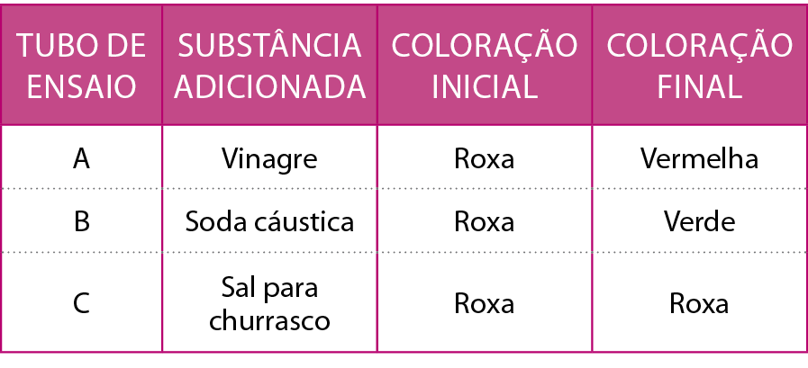
Se o estudante realizar outro experimento adicionando no tubo A KOH, no B, HNO
3 e, no C, KNO
3 , contendo a solução inicial extraída do repolho roxo, a coloração final respectivamente será:
roxa, verde, roxa.
roxa, vermelha, verde.
verde, roxa, vermelha.
vermelha, verde, roxa.
verde, vermelha, roxa.
8
Acafe-SC 2016
Para resolver a questão a seguir considere o texto retirado do website da Universidade Federal de São Paulo (UNIFESP).
[...] Junho de 2003. Um erro em uma indústria farmacêutica provoca intoxicação em dezenas de pessoas. Há uma morte confirmada e outras 15 suspeitas. A causa: um veneno chamado carbonato de bário. O Celobar, medicamento que causou a
tragédia, deveria conter somente sulfato de bário. Mas, na tentativa de transformar o carbonato em sulfato, algum erro fez com que quase 15% da massa do Celobar comercializado fosse de carbonato de bário.
Pacientes tomam sulfato de bário para que os órgãos de seu sistema digestório fiquem visíveis nas radiografias. É o chamado contraste. O problema é que os íons bário são muito tóxicos. Quando absorvidos causam vômito, cólicas, diarreia,
tremores, convulsões e até a morte. Cerca de 0,5 g é dose fatal. Mas, se a toxicidade é do bário, por que o sulfato de bário não é perigoso e o carbonato de bário sim?
É que o sulfato de bário praticamente não se dissolve na água. Sua solubilidade em água é de apenas 1,0 · 10
–5 mol/L (sob temperatura de 25 °C). O que os pacientes ingerem é uma suspensão aquosa desse sal em que a maior parte dele não está dissolvida. Sem dissolução, não há, praticamente, dissociação do sal. É por isso
que os íons bário não são liberados para serem absorvidos pelo organismo. Não há perigo.
Ainda assim, só para garantir, essa suspensão costuma ser preparada em uma solução de sulfato de potássio, um sal bastante solúvel em água. A função desse sal é aumentar a concentração de íons sulfato. Desse modo, o equilíbrio da dissociação
do sal é bem deslocado para a esquerda, diminuindo ainda mais a presença de íons bário na suspensão. Com o carbonato de bário é diferente. Apesar de pouco solúvel em água, ele reage com o ácido clorídrico do nosso estômago formando
um sal solúvel, o cloreto de bário. Ao se dissolver, esse sal se dissocia, liberando íons bário para o organismo. O corpo absorve esses íons, e a intoxicação acontece. Triste é saber que uma simples gota de ácido clorídrico, misturada
ao Celobar, teria evitado a tragédia. Essa gota produziria bolhas de gás carbônico, o que evidenciaria a presença do veneno no medicamento [...].
http://www2.unifesp.br/reitoria/residuos//curiosidades/casocelobar (data do acesso: 12/04/2016).
Baseado nas informações fornecidas e nos conceitos químicos assinale a alternativa que contém as fórmulas das respectivas espécies químicas: carbonato de bário, sulfato de bário, sulfato de potássio, cloreto de bário, ácido clorídrico
e gás carbônico.
BaCO
3 , BaSO
4 , K
2 SO
4 , BaCl
2 , HCl(aq), CO
2 (g).
Ba
2 CO
3 , BaSO
4 , KSO
4 , BaCl
2 , HCl(aq), H
2 CO
3 (g).
BaCO
3 , BaSO
3 , K
2 CO
3 , BaCl
3 , HClO
3 (aq), CO
2 (g).
BaCO
3 , BaSO
4 , KSO
4 , BaCl
2 , HCl(aq), CO
2 (g).
9
UFRGS 2017 Os compostos inorgânicos encontram amplo emprego nas mais diversas aplicações. Na Coluna 1, abaixo, estão listados cinco compostos inorgânicos; na coluna 2, diferentes possibilidades de aplicação.
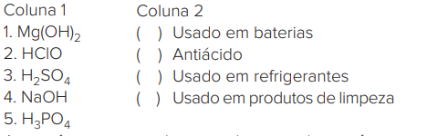
A sequência correta de preenchimento dos parênteses, de cima para baixo, é
5 – 1 – 3 – 4.
1 – 2 – 3 – 5.
3 – 4 – 1 – 2.
4 – 1 – 5 – 4.
3 – 1 – 5 – 2.
10
PUC-MG 2016 O gesso, sulfato de cálcio anidro endurecido, é um sal muito utilizado em diversas áreas do conhecimento, tais como: medicina (imobilização de membros com fratura) e ornamentações, por exemplo. Sobre a função
inorgânica sal, assinale a alternativa CORRETA.
Os sais são provenientes de uma reação entre um ácido e a água.
Os hidrogenossais são provenientes de uma reação de neutralização parcial, ou seja, alguns hidrogênios ionizáveis não são neutralizados.
Soluções salinas não são boas condutoras de eletricidade.
A classificação de “sais hidratados” se justifica por serem na verdade soluções salinas.
11
Acafe-SC 2017 Baseado nos conceitos sobre funções químicas inorgânicas, analise as afirmações a seguir.
O ácido fosforoso possui 3 hidrogênios ionizáveis.
Os nomes dos seguintes ânions ClO
– , NO
2– , CrO
42– e P
2 O
72– são, respectivamente: hipoclorito, nitrito, cromato e pirofosfato.
Água régia corresponde a uma mistura de 3 partes de ácido nítrico para 1 parte de ácido clorídrico.
Assinale a alternativa correta.
Todas as afirmações estão corretas.
Todas as afirmações estão incorretas.
Apenas I e III estão corretas.
Apenas a II está correta.
12
ITA-SP 2016 Assinale a opção que apresenta o sal solúvel em água a 25
°
C.
CaSO
4 .
PbCl
2 .
Ag
2 CO
3 .
Hg
2 Br
2 .
FeBr
3 .
13
Uerj 2017 Para realização de movimentos de ginástica olímpica, os atletas passam um pó branco nas mãos, constituído principalmente por carbonato de magnésio. Em relação a esse composto, apresente sua fórmula química, sua
função química inorgânica e o número de oxidação do magnésio. Nomeie, também, a ligação interatômica que ocorre entre o carbono e o oxigênio.
14
FCMMG 2017 Medicamentos homeopáticos baseiam-se no princípio Hipocrático
“similia similibus curantur” , ou seja, semelhante cura semelhante, ao passo que, na medicina tradicional, a cura é baseada no princípio Hipocrático
“contraria contrariis” , com medicamentos contrários. Baseando-se nessas informações, indique o medicamento que
NÃO é utilizado segundo o princípio homeopático (semelhante à doença):
Bicarbonato de sódio (sal derivado de ácido fraco e base forte), usado no tratamento de azia estomacal.
Coffea cruda (café), cujo princípio ativo cafeína é um estimulante do SNC, usado no tratamento de insônia.
Silícea (mineral contendo SiO
2 , conhecido como cimento), usado no tratamento de deficiência constitucional.
Carbo vegetalis (carvão vegetal com capacidade de absorver odores), usado para problemas de hálito fétido.
15
Unisa-SP 2016 Um time de futebol encomendou, junto a um fabricante de fogos de artifício, alguns rojões que, no momento da explosão, iluminem o céu com as cores do time, verde e vermelho. O fabricante tinha à sua disposição
os seguintes sais para serem misturados à pólvora: sulfato de sódio, sulfato de cobre(II), nitrato de estrôncio e nitrato de potássio. A tabela apresenta as cores das chamas obtidas na queima de alguns sais.
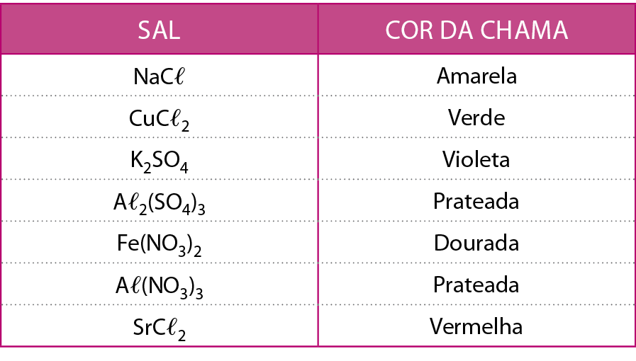
Com base na tabela, determine quais sais, dentre os disponíveis para o fabricante, deverão ser utilizados na confecção dos rojões encomendados.
Considerando que a pólvora é formada por carbono (carvão), enxofre e nitrato de potássio e que os combustíveis dessa mistura são apenas os compostos covalentes, escreva as fórmulas moleculares dos produtos obtidos na combustão
completa da pólvora.